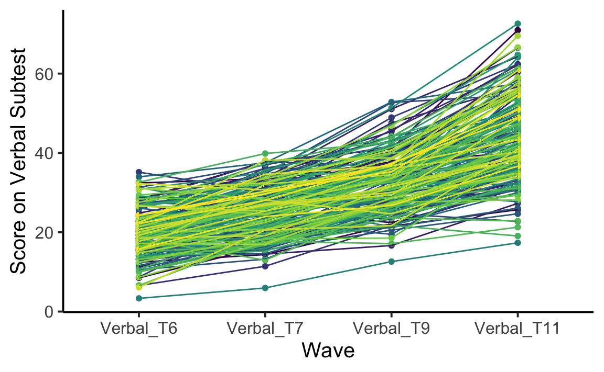

81 Lo Sviluppo dell’Intelligenza
Prerequisiti
Concetti e Competenze Chiave
Preparazione del Notebook
81.1 Introduzione
Questa discussione riproduce il tutorial presentato nel Workshop on Latent Growth Modeling in Lavaan tenuto al Donders Institute nel novembre 2024. Questo tutorial riprende in un unico studio i concetti che avevamo esaminato nei capitoli precedenti. Verranno utilizzati dei dati longitudinali relativi al WISC-V forniti dagli autori a 6, 7, 9 e 11 anni.
81.2 Dati
Il WISC-V Test (Wechsler Intelligence Scale for Children) è un test del QI somministrato a bambini di età compresa tra 6 e 16 anni. Fornisce cinque punteggi indici principali, ovvero Indice di Comprensione Verbale, Indice Visuo-Spaziale, Indice di Ragionamento Fluido, Indice di Memoria di Lavoro e Indice di Velocità di Elaborazione. Nel workshop gli autori discutono su un sottoinsieme contenente: Indice di Comprensione Verbale, Indice di Velocità di Elaborazione e il totale.
wisc <- rio::import(
here::here(
"data", "wisc.csv"
)
)[,-1]
head(wisc) #first 6 rows
#> ID Verbal_T6 Verbal_T7 Verbal_T9 Verbal_T11 Pspeed_T6 Pspeed_T7 Pspeed_T9
#> 1 0 24.4 27.0 39.6 55.6 19.84 23.0 43.9
#> 2 1 12.4 14.4 21.9 37.8 5.90 13.4 18.3
#> 3 2 32.4 33.5 34.3 50.2 27.64 45.0 47.0
#> 4 3 22.7 28.4 42.2 44.7 33.16 29.7 46.0
#> 5 4 28.2 37.8 41.1 71.0 27.64 44.4 65.5
#> 6 5 16.1 20.1 38.0 39.9 8.45 15.8 27.0
#> Pspeed_T11 Total_6 Total_7 Total_9 Total_11 age_T6 sex race mo_edu
#> 1 44.2 22.13 25.0 41.8 49.9 5.83 1 1 4
#> 2 40.4 9.17 13.9 20.1 39.1 5.92 2 2 6
#> 3 77.7 30.03 39.3 40.6 63.9 6.33 1 1 2
#> 4 61.7 27.93 29.0 44.1 53.2 6.33 2 1 2
#> 5 64.2 27.93 41.1 53.3 67.6 6.17 1 1 3
#> 6 39.1 12.25 17.9 32.5 39.5 5.67 1 1 2
#> mo_educat fa_edu fa_educat
#> 1 0 4 0
#> 2 0 5 0
#> 3 2 3 1
#> 4 2 2 2
#> 5 1 3 1
#> 6 2 2 2dim(wisc) #number of rows and columns
#> [1] 204 20Gli autori si concentrano sull’analisi dei dati del subtest verbale.
wisc_verbal <- wisc[,c("ID","Verbal_T6","Verbal_T7","Verbal_T9","Verbal_T11")]
glimpse(wisc_verbal)
#> Rows: 204
#> Columns: 5
#> $ ID <int> 0, 1, 2, 3, 4, 5, 6, 7, 8, 9, 11, 14, 15, 16, 17, 21, 2…
#> $ Verbal_T6 <dbl> 24.4, 12.4, 32.4, 22.7, 28.2, 16.1, 8.5, 14.1, 15.5, 20…
#> $ Verbal_T7 <dbl> 27.0, 14.4, 33.5, 28.4, 37.8, 20.1, 16.5, 20.9, 23.4, 3…
#> $ Verbal_T9 <dbl> 39.6, 21.9, 34.3, 42.2, 41.1, 38.0, 28.7, 21.5, 37.4, 3…
#> $ Verbal_T11 <dbl> 55.6, 37.8, 50.2, 44.7, 71.0, 39.9, 40.8, 25.7, 45.5, 4…I dati vanno trasformati nel formato long.
wisc_verbal_long <- wisc_verbal %>%
pivot_longer(!ID, names_to = "wave", values_to = "verbal")
wisc_verbal_long |> head()
#> # A tibble: 6 × 3
#> ID wave verbal
#> <int> <chr> <dbl>
#> 1 0 Verbal_T6 24.4
#> 2 0 Verbal_T7 27.0
#> 3 0 Verbal_T9 39.6
#> 4 0 Verbal_T11 55.6
#> 5 1 Verbal_T6 12.4
#> 6 1 Verbal_T7 14.4Un grafico dei dati si ottiene nel modo seguente.
wisc_verbal_long$wave = factor(wisc_verbal_long$wave, levels=c("Verbal_T6","Verbal_T7","Verbal_T9","Verbal_T11"))
ggplot(wisc_verbal_long, aes(wave, verbal, group=ID, fill=ID, color=ID)) +
geom_point() +
geom_line() +
theme_classic(base_size = 15) + # adding a classic theme; https://ggplot2.tidyverse.org/reference/ggtheme.html
theme(legend.position = "none") + # getting rid of legend
labs(x = "Wave", y = "Score on Verbal Subtest")
81.3 Modello lineare
Il modello più semplice è quello di crescita lineare.
# Create LGM
linear_growth_model <- '
i =~ 1*Verbal_T6 + 1*Verbal_T7 + 1*Verbal_T9 + 1*Verbal_T11
s =~ 0*Verbal_T6 + 1*Verbal_T7 + 2*Verbal_T9 + 3*Verbal_T11'Adattiamo il modello ai dati ed esaminiamo i risultati.
# Fit LGM
fit_linear_growth_model <- growth(linear_growth_model, data=wisc_verbal,missing='fiml')
# Output results
summary(fit_linear_growth_model, fit.measures = TRUE, rsquare = TRUE, standardized = TRUE)
#> lavaan 0.6-19 ended normally after 65 iterations
#>
#> Estimator ML
#> Optimization method NLMINB
#> Number of model parameters 9
#>
#> Number of observations 204
#> Number of missing patterns 1
#>
#> Model Test User Model:
#>
#> Test statistic 100.756
#> Degrees of freedom 5
#> P-value (Chi-square) 0.000
#>
#> Model Test Baseline Model:
#>
#> Test statistic 585.906
#> Degrees of freedom 6
#> P-value 0.000
#>
#> User Model versus Baseline Model:
#>
#> Comparative Fit Index (CFI) 0.835
#> Tucker-Lewis Index (TLI) 0.802
#>
#> Robust Comparative Fit Index (CFI) 0.835
#> Robust Tucker-Lewis Index (TLI) 0.802
#>
#> Loglikelihood and Information Criteria:
#>
#> Loglikelihood user model (H0) -2530.194
#> Loglikelihood unrestricted model (H1) -2479.816
#>
#> Akaike (AIC) 5078.388
#> Bayesian (BIC) 5108.251
#> Sample-size adjusted Bayesian (SABIC) 5079.736
#>
#> Root Mean Square Error of Approximation:
#>
#> RMSEA 0.306
#> 90 Percent confidence interval - lower 0.256
#> 90 Percent confidence interval - upper 0.360
#> P-value H_0: RMSEA <= 0.050 0.000
#> P-value H_0: RMSEA >= 0.080 1.000
#>
#> Robust RMSEA 0.306
#> 90 Percent confidence interval - lower 0.256
#> 90 Percent confidence interval - upper 0.360
#> P-value H_0: Robust RMSEA <= 0.050 0.000
#> P-value H_0: Robust RMSEA >= 0.080 1.000
#>
#> Standardized Root Mean Square Residual:
#>
#> SRMR 0.113
#>
#> Parameter Estimates:
#>
#> Standard errors Standard
#> Information Observed
#> Observed information based on Hessian
#>
#> Latent Variables:
#> Estimate Std.Err z-value P(>|z|) Std.lv Std.all
#> i =~
#> Verbal_T6 1.000 4.354 0.775
#> Verbal_T7 1.000 4.354 0.681
#> Verbal_T9 1.000 4.354 0.583
#> Verbal_T11 1.000 4.354 0.417
#> s =~
#> Verbal_T6 0.000 0.000 0.000
#> Verbal_T7 1.000 1.251 0.196
#> Verbal_T9 2.000 2.502 0.335
#> Verbal_T11 3.000 3.752 0.360
#>
#> Covariances:
#> Estimate Std.Err z-value P(>|z|) Std.lv Std.all
#> i ~~
#> s 5.081 1.079 4.709 0.000 0.933 0.933
#>
#> Intercepts:
#> Estimate Std.Err z-value P(>|z|) Std.lv Std.all
#> i 18.760 0.391 48.006 0.000 4.308 4.308
#> s 7.291 0.192 38.007 0.000 5.829 5.829
#>
#> Variances:
#> Estimate Std.Err z-value P(>|z|) Std.lv Std.all
#> .Verbal_T6 12.600 2.175 5.793 0.000 12.600 0.399
#> .Verbal_T7 10.213 1.463 6.982 0.000 10.213 0.250
#> .Verbal_T9 10.243 1.941 5.277 0.000 10.243 0.184
#> .Verbal_T11 45.410 5.781 7.855 0.000 45.410 0.417
#> i 18.961 3.154 6.012 0.000 1.000 1.000
#> s 1.565 0.658 2.379 0.017 1.000 1.000
#>
#> R-Square:
#> Estimate
#> Verbal_T6 0.601
#> Verbal_T7 0.750
#> Verbal_T9 0.816
#> Verbal_T11 0.583Il modello non si adatta bene ai dati.
81.4 Crescita non lineare
Nell’analisi precedente, abbiamo modellato un modello di crescita lineare. Tuttavia, è anche possibile modellare una crescita non lineare in lavaan come una traiettoria quadratica. Per fare ciò, è necessario aggiungere un terzo parametro chiamato termine quadratico che avrà gli stessi loadings del coefficiente angolare, ma al quadrato.
Per fare questo, è necessario specificare un’altra variabile latente nel modello chiamata termine quadratico. Al termine quadratico vengono assegnati loadings che sono i quadrati dei loadings del coefficiente angolare.
# Create quadratic growth model
quad_growth_model <- 'i =~ 1*Verbal_T6 + 1*Verbal_T7 + 1*Verbal_T9 + 1*Verbal_T11
s =~ 0*Verbal_T6 + 1*Verbal_T7 + 2*Verbal_T9 + 3*Verbal_T11
q =~ 0*Verbal_T6 + 1*Verbal_T7 + 4*Verbal_T9 + 9*Verbal_T11'
# Fit model
fit_quad_growth_model <- growth(quad_growth_model, data=wisc_verbal,missing='fiml')
# Output results
summary(fit_quad_growth_model, fit.measures = TRUE, rsquare = TRUE, standardized = TRUE)
#> lavaan 0.6-19 ended normally after 99 iterations
#>
#> Estimator ML
#> Optimization method NLMINB
#> Number of model parameters 13
#>
#> Number of observations 204
#> Number of missing patterns 1
#>
#> Model Test User Model:
#>
#> Test statistic 6.176
#> Degrees of freedom 1
#> P-value (Chi-square) 0.013
#>
#> Model Test Baseline Model:
#>
#> Test statistic 585.906
#> Degrees of freedom 6
#> P-value 0.000
#>
#> User Model versus Baseline Model:
#>
#> Comparative Fit Index (CFI) 0.991
#> Tucker-Lewis Index (TLI) 0.946
#>
#> Robust Comparative Fit Index (CFI) 0.991
#> Robust Tucker-Lewis Index (TLI) 0.946
#>
#> Loglikelihood and Information Criteria:
#>
#> Loglikelihood user model (H0) -2482.904
#> Loglikelihood unrestricted model (H1) -2479.816
#>
#> Akaike (AIC) 4991.808
#> Bayesian (BIC) 5034.943
#> Sample-size adjusted Bayesian (SABIC) 4993.755
#>
#> Root Mean Square Error of Approximation:
#>
#> RMSEA 0.159
#> 90 Percent confidence interval - lower 0.059
#> 90 Percent confidence interval - upper 0.289
#> P-value H_0: RMSEA <= 0.050 0.039
#> P-value H_0: RMSEA >= 0.080 0.910
#>
#> Robust RMSEA 0.159
#> 90 Percent confidence interval - lower 0.059
#> 90 Percent confidence interval - upper 0.289
#> P-value H_0: Robust RMSEA <= 0.050 0.039
#> P-value H_0: Robust RMSEA >= 0.080 0.910
#>
#> Standardized Root Mean Square Residual:
#>
#> SRMR 0.023
#>
#> Parameter Estimates:
#>
#> Standard errors Standard
#> Information Observed
#> Observed information based on Hessian
#>
#> Latent Variables:
#> Estimate Std.Err z-value P(>|z|) Std.lv Std.all
#> i =~
#> Verbal_T6 1.000 4.883 0.843
#> Verbal_T7 1.000 4.883 0.800
#> Verbal_T9 1.000 4.883 0.668
#> Verbal_T11 1.000 4.883 0.459
#> s =~
#> Verbal_T6 0.000 NA NA
#> Verbal_T7 1.000 NA NA
#> Verbal_T9 2.000 NA NA
#> Verbal_T11 3.000 NA NA
#> q =~
#> Verbal_T6 0.000 NA NA
#> Verbal_T7 1.000 NA NA
#> Verbal_T9 4.000 NA NA
#> Verbal_T11 9.000 NA NA
#>
#> Covariances:
#> Estimate Std.Err z-value P(>|z|) Std.lv Std.all
#> i ~~
#> s -0.564 6.937 -0.081 0.935 -0.064 -0.064
#> q 2.014 1.811 1.112 0.266 0.738 0.738
#> s ~~
#> q 1.518 1.719 0.883 0.377 1.500 1.500
#>
#> Intercepts:
#> Estimate Std.Err z-value P(>|z|) Std.lv Std.all
#> i 19.697 0.409 48.124 0.000 4.033 4.033
#> s 4.051 0.354 11.439 0.000 NA NA
#> q 1.284 0.130 9.861 0.000 NA NA
#>
#> Variances:
#> Estimate Std.Err z-value P(>|z|) Std.lv Std.all
#> .Verbal_T6 9.730 6.209 1.567 0.117 9.730 0.290
#> .Verbal_T7 11.059 2.297 4.814 0.000 11.059 0.297
#> .Verbal_T9 9.542 2.677 3.564 0.000 9.542 0.179
#> .Verbal_T11 29.417 11.518 2.554 0.011 29.417 0.260
#> i 23.848 6.558 3.636 0.000 1.000 1.000
#> s -3.277 7.053 -0.465 0.642 NA NA
#> q -0.312 0.656 -0.476 0.634 NA NA
#>
#> R-Square:
#> Estimate
#> Verbal_T6 0.710
#> Verbal_T7 0.703
#> Verbal_T9 0.821
#> Verbal_T11 0.740È anche possibile modellare una crescita non lineare in lavaan senza alcuna ipotesi sulla forma. Per farlo, si fissano i loadings della prima e dell’ultima misurazione, ma si stimano liberamente quelli intermedi.
# Create non-linear growth model
basis_growth_model <- 'i =~ 1*Verbal_T6 + 1*Verbal_T7 + 1*Verbal_T9 + 1*Verbal_T11
s =~ 0*Verbal_T6 + Verbal_T7 + Verbal_T9 + 1*Verbal_T11'
# Fit model
fit_basis_growth_model <- growth(basis_growth_model, data=wisc_verbal,missing='fiml')
# Output results
summary(fit_basis_growth_model, fit.measures = TRUE, rsquare = TRUE, standardized = TRUE)
#> lavaan 0.6-19 ended normally after 109 iterations
#>
#> Estimator ML
#> Optimization method NLMINB
#> Number of model parameters 11
#>
#> Number of observations 204
#> Number of missing patterns 1
#>
#> Model Test User Model:
#>
#> Test statistic 5.893
#> Degrees of freedom 3
#> P-value (Chi-square) 0.117
#>
#> Model Test Baseline Model:
#>
#> Test statistic 585.906
#> Degrees of freedom 6
#> P-value 0.000
#>
#> User Model versus Baseline Model:
#>
#> Comparative Fit Index (CFI) 0.995
#> Tucker-Lewis Index (TLI) 0.990
#>
#> Robust Comparative Fit Index (CFI) 0.995
#> Robust Tucker-Lewis Index (TLI) 0.990
#>
#> Loglikelihood and Information Criteria:
#>
#> Loglikelihood user model (H0) -2482.763
#> Loglikelihood unrestricted model (H1) -2479.816
#>
#> Akaike (AIC) 4987.525
#> Bayesian (BIC) 5024.024
#> Sample-size adjusted Bayesian (SABIC) 4989.173
#>
#> Root Mean Square Error of Approximation:
#>
#> RMSEA 0.069
#> 90 Percent confidence interval - lower 0.000
#> 90 Percent confidence interval - upper 0.151
#> P-value H_0: RMSEA <= 0.050 0.275
#> P-value H_0: RMSEA >= 0.080 0.491
#>
#> Robust RMSEA 0.069
#> 90 Percent confidence interval - lower 0.000
#> 90 Percent confidence interval - upper 0.151
#> P-value H_0: Robust RMSEA <= 0.050 0.275
#> P-value H_0: Robust RMSEA >= 0.080 0.491
#>
#> Standardized Root Mean Square Residual:
#>
#> SRMR 0.043
#>
#> Parameter Estimates:
#>
#> Standard errors Standard
#> Information Observed
#> Observed information based on Hessian
#>
#> Latent Variables:
#> Estimate Std.Err z-value P(>|z|) Std.lv Std.all
#> i =~
#> Verbal_T6 1.000 4.610 0.825
#> Verbal_T7 1.000 4.610 0.731
#> Verbal_T9 1.000 4.610 0.620
#> Verbal_T11 1.000 4.610 0.446
#> s =~
#> Verbal_T6 0.000 0.000 0.000
#> Verbal_T7 0.237 0.012 20.223 0.000 1.300 0.206
#> Verbal_T9 0.536 0.012 43.295 0.000 2.937 0.395
#> Verbal_T11 1.000 5.484 0.531
#>
#> Covariances:
#> Estimate Std.Err z-value P(>|z|) Std.lv Std.all
#> i ~~
#> s 15.072 3.133 4.811 0.000 0.596 0.596
#>
#> Intercepts:
#> Estimate Std.Err z-value P(>|z|) Std.lv Std.all
#> i 19.634 0.391 50.221 0.000 4.259 4.259
#> s 24.180 0.565 42.773 0.000 4.409 4.409
#>
#> Variances:
#> Estimate Std.Err z-value P(>|z|) Std.lv Std.all
#> .Verbal_T6 9.974 1.645 6.063 0.000 9.974 0.319
#> .Verbal_T7 9.704 1.307 7.422 0.000 9.704 0.244
#> .Verbal_T9 9.217 1.513 6.093 0.000 9.217 0.167
#> .Verbal_T11 25.340 4.317 5.870 0.000 25.340 0.237
#> i 21.255 2.898 7.335 0.000 1.000 1.000
#> s 30.076 6.788 4.430 0.000 1.000 1.000
#>
#> R-Square:
#> Estimate
#> Verbal_T6 0.681
#> Verbal_T7 0.756
#> Verbal_T9 0.833
#> Verbal_T11 0.763# Compare model fit
anova(fit_linear_growth_model, fit_quad_growth_model)
#>
#> Chi-Squared Difference Test
#>
#> Df AIC BIC Chisq Chisq diff RMSEA Df diff
#> fit_quad_growth_model 1 4992 5035 6.18
#> fit_linear_growth_model 5 5078 5108 100.76 94.6 0.333 4
#> Pr(>Chisq)
#> fit_quad_growth_model
#> fit_linear_growth_model <2e-16Il modello non lineare in lavaan senza alcuna ipotesi sulla forma e il modello quadratico non sono annidati. Pertanto un test del rapporto di verosimiglianza non è possibile. Tuttavia, gli indici di bontà di adattamento del modello senza ipotesi sulla forma sono migliori del modello quadratico, per cui sarà quello il modello prescelto.
81.5 Predizioni
Si potrebbe essere interessati a ciò che predice i punteggi di base e/o il cambiamento. Per valutare questo, si possono aggiungere predittori nel modello di crescita. Un’ipotesi potrebbe essere che il livello di istruzione della madre predica lo sviluppo della comprensione verbale.
# Specify model
basis_growth_model_cov <- '
i =~ 1*Verbal_T6 + 1*Verbal_T7 + 1*Verbal_T9 + 1*Verbal_T11
s =~ 0*Verbal_T6 + Verbal_T7 + Verbal_T9 + 1*Verbal_T11
s~mo_edu
i~mo_edu
'# Fit model
fit_basis_growth_model_cov <- growth(basis_growth_model_cov, data=wisc,missing='fiml')
# Output results
summary(fit_basis_growth_model_cov, fit.measures = TRUE, rsquare = TRUE, standardized = TRUE)
#> lavaan 0.6-19 ended normally after 118 iterations
#>
#> Estimator ML
#> Optimization method NLMINB
#> Number of model parameters 13
#>
#> Number of observations 204
#> Number of missing patterns 1
#>
#> Model Test User Model:
#>
#> Test statistic 6.498
#> Degrees of freedom 5
#> P-value (Chi-square) 0.261
#>
#> Model Test Baseline Model:
#>
#> Test statistic 650.266
#> Degrees of freedom 10
#> P-value 0.000
#>
#> User Model versus Baseline Model:
#>
#> Comparative Fit Index (CFI) 0.998
#> Tucker-Lewis Index (TLI) 0.995
#>
#> Robust Comparative Fit Index (CFI) 0.998
#> Robust Tucker-Lewis Index (TLI) 0.995
#>
#> Loglikelihood and Information Criteria:
#>
#> Loglikelihood user model (H0) -2450.885
#> Loglikelihood unrestricted model (H1) -2447.636
#>
#> Akaike (AIC) 4927.770
#> Bayesian (BIC) 4970.906
#> Sample-size adjusted Bayesian (SABIC) 4929.718
#>
#> Root Mean Square Error of Approximation:
#>
#> RMSEA 0.038
#> 90 Percent confidence interval - lower 0.000
#> 90 Percent confidence interval - upper 0.110
#> P-value H_0: RMSEA <= 0.050 0.520
#> P-value H_0: RMSEA >= 0.080 0.210
#>
#> Robust RMSEA 0.038
#> 90 Percent confidence interval - lower 0.000
#> 90 Percent confidence interval - upper 0.110
#> P-value H_0: Robust RMSEA <= 0.050 0.520
#> P-value H_0: Robust RMSEA >= 0.080 0.210
#>
#> Standardized Root Mean Square Residual:
#>
#> SRMR 0.038
#>
#> Parameter Estimates:
#>
#> Standard errors Standard
#> Information Observed
#> Observed information based on Hessian
#>
#> Latent Variables:
#> Estimate Std.Err z-value P(>|z|) Std.lv Std.all
#> i =~
#> Verbal_T6 1.000 4.615 0.826
#> Verbal_T7 1.000 4.615 0.732
#> Verbal_T9 1.000 4.615 0.619
#> Verbal_T11 1.000 4.615 0.447
#> s =~
#> Verbal_T6 0.000 0.000 0.000
#> Verbal_T7 0.237 0.012 20.312 0.000 1.306 0.207
#> Verbal_T9 0.535 0.012 43.171 0.000 2.949 0.396
#> Verbal_T11 1.000 5.508 0.534
#>
#> Regressions:
#> Estimate Std.Err z-value P(>|z|) Std.lv Std.all
#> s ~
#> mo_edu -1.724 0.414 -4.165 0.000 -0.313 -0.394
#> i ~
#> mo_edu -1.943 0.259 -7.503 0.000 -0.421 -0.531
#>
#> Covariances:
#> Estimate Std.Err z-value P(>|z|) Std.lv Std.all
#> .i ~~
#> .s 9.676 2.721 3.556 0.000 0.489 0.489
#>
#> Intercepts:
#> Estimate Std.Err z-value P(>|z|) Std.lv Std.all
#> .i 26.302 0.958 27.446 0.000 5.700 5.700
#> .s 30.098 1.527 19.710 0.000 5.464 5.464
#>
#> Variances:
#> Estimate Std.Err z-value P(>|z|) Std.lv Std.all
#> .Verbal_T6 9.923 1.622 6.117 0.000 9.923 0.318
#> .Verbal_T7 9.607 1.281 7.500 0.000 9.607 0.242
#> .Verbal_T9 9.443 1.501 6.291 0.000 9.443 0.170
#> .Verbal_T11 24.956 4.288 5.820 0.000 24.956 0.234
#> .i 15.298 2.309 6.624 0.000 0.718 0.718
#> .s 25.619 6.352 4.033 0.000 0.844 0.844
#>
#> R-Square:
#> Estimate
#> Verbal_T6 0.682
#> Verbal_T7 0.758
#> Verbal_T9 0.830
#> Verbal_T11 0.766
#> i 0.282
#> s 0.156I risultati indicano come il livello di educazione della madre influenza sia il valore di base delle abilità verbali del bambino, sia il tasso di crescita.
Aggiungiamo ora la velocità di elaborazione a 11 anni come esito dei cambiamenti nella comprensione verbale. In altre parole, verifichiamo se le pendenze del cambiamento verbale predicono il livello di velocità di elaborazione a 11.
# Specify model
basis_growth_model_covO <- '
i =~ 1*Verbal_T6 + 1*Verbal_T7 + 1*Verbal_T9 + 1*Verbal_T11
s =~ 0*Verbal_T6 + Verbal_T7 + Verbal_T9 + 1*Verbal_T11
Pspeed_T11~s
Pspeed_T11~1
'
# Fit model
fit_basis_growth_model_covO <- growth(basis_growth_model_covO, data=wisc,missing='fiml')
# Output results
summary(fit_basis_growth_model_covO, fit.measures = TRUE, rsquare = TRUE, standardized = TRUE)
#> lavaan 0.6-19 ended normally after 142 iterations
#>
#> Estimator ML
#> Optimization method NLMINB
#> Number of model parameters 14
#>
#> Number of observations 204
#> Number of missing patterns 1
#>
#> Model Test User Model:
#>
#> Test statistic 14.016
#> Degrees of freedom 6
#> P-value (Chi-square) 0.029
#>
#> Model Test Baseline Model:
#>
#> Test statistic 685.769
#> Degrees of freedom 10
#> P-value 0.000
#>
#> User Model versus Baseline Model:
#>
#> Comparative Fit Index (CFI) 0.988
#> Tucker-Lewis Index (TLI) 0.980
#>
#> Robust Comparative Fit Index (CFI) 0.988
#> Robust Tucker-Lewis Index (TLI) 0.980
#>
#> Loglikelihood and Information Criteria:
#>
#> Loglikelihood user model (H0) -3240.780
#> Loglikelihood unrestricted model (H1) -3233.772
#>
#> Akaike (AIC) 6509.560
#> Bayesian (BIC) 6556.014
#> Sample-size adjusted Bayesian (SABIC) 6511.657
#>
#> Root Mean Square Error of Approximation:
#>
#> RMSEA 0.081
#> 90 Percent confidence interval - lower 0.024
#> 90 Percent confidence interval - upper 0.137
#> P-value H_0: RMSEA <= 0.050 0.151
#> P-value H_0: RMSEA >= 0.080 0.566
#>
#> Robust RMSEA 0.081
#> 90 Percent confidence interval - lower 0.024
#> 90 Percent confidence interval - upper 0.137
#> P-value H_0: Robust RMSEA <= 0.050 0.151
#> P-value H_0: Robust RMSEA >= 0.080 0.566
#>
#> Standardized Root Mean Square Residual:
#>
#> SRMR 0.043
#>
#> Parameter Estimates:
#>
#> Standard errors Standard
#> Information Observed
#> Observed information based on Hessian
#>
#> Latent Variables:
#> Estimate Std.Err z-value P(>|z|) Std.lv Std.all
#> i =~
#> Verbal_T6 1.000 4.476 0.804
#> Verbal_T7 1.000 4.476 0.714
#> Verbal_T9 1.000 4.476 0.598
#> Verbal_T11 1.000 4.476 0.434
#> s =~
#> Verbal_T6 0.000 0.000 0.000
#> Verbal_T7 0.237 0.012 19.886 0.000 1.220 0.195
#> Verbal_T9 0.534 0.013 42.125 0.000 2.752 0.367
#> Verbal_T11 1.000 5.157 0.500
#>
#> Regressions:
#> Estimate Std.Err z-value P(>|z|) Std.lv Std.all
#> Pspeed_T11 ~
#> s 1.683 0.219 7.690 0.000 8.680 0.697
#>
#> Covariances:
#> Estimate Std.Err z-value P(>|z|) Std.lv Std.all
#> i ~~
#> s 17.195 2.513 6.842 0.000 0.745 0.745
#>
#> Intercepts:
#> Estimate Std.Err z-value P(>|z|) Std.lv Std.all
#> .Pspeed_T11 10.214 5.368 1.903 0.057 10.214 0.820
#> i 19.648 0.390 50.431 0.000 4.389 4.389
#> s 24.194 0.554 43.672 0.000 4.691 4.691
#>
#> Variances:
#> Estimate Std.Err z-value P(>|z|) Std.lv Std.all
#> .Verbal_T6 10.997 1.451 7.578 0.000 10.997 0.354
#> .Verbal_T7 9.658 1.299 7.436 0.000 9.658 0.246
#> .Verbal_T9 10.154 1.529 6.640 0.000 10.154 0.181
#> .Verbal_T11 25.254 3.694 6.836 0.000 25.254 0.238
#> .Pspeed_T11 79.657 10.996 7.244 0.000 79.657 0.514
#> i 20.036 2.643 7.580 0.000 1.000 1.000
#> s 26.598 5.701 4.666 0.000 1.000 1.000
#>
#> R-Square:
#> Estimate
#> Verbal_T6 0.646
#> Verbal_T7 0.754
#> Verbal_T9 0.819
#> Verbal_T11 0.762
#> Pspeed_T11 0.486I dati mostrano come le pendenze del cambiamento verbale effettivamente predicono il livello di velocità di elaborazione a 11 anni.
I predittori tempo-invarianti sono predittori delle differenze individuali nelle intercette e nelle pendenze. Sono spesso misurati al basale (ad esempio, reddito familiare) o sono caratteristiche specifiche della persona il cui valore è costante nel tempo (ad esempio, sesso biologico, paese di origine). Ad esempio, nelle analisi precedenti, il livello di istruzione della madre e la velocità di elaborazione a 6 anni sono predittori tempo-invarianti.
I predittori tempo-varianti sono predittori dell’esito in ogni punto temporale. Nel nostro esempio, ad esempio, avremmo bisogno di misurazioni a T6, T7, T9 e T11.
In questo ultimo modello useremo la velocità di elaborazione come predittore tempo-variante della misurazione verbale in ogni punto temporale. Ci chiediamo le seguenti domande. Come sono l’intercetta e la pendenza delle misure verbali? La velocità di elaborazione predice le misure verbali allo stesso modo in tutti i punti temporali?
# Specify model
basis_growth_model_tvp <- '
i =~ 1*Verbal_T6 + 1*Verbal_T7 + 1*Verbal_T9 + 1*Verbal_T11
s =~ 0*Verbal_T6 + Verbal_T7 + Verbal_T9 + 1*Verbal_T11
Verbal_T6~Pspeed_T6
Verbal_T7~Pspeed_T7
Verbal_T9~Pspeed_T9
Verbal_T11~Pspeed_T11
'
# Fit LGM
fit_basis_growth_model_tvp <- growth(basis_growth_model_tvp, data=wisc,missing='fiml')
# Output results
summary(fit_basis_growth_model_tvp, fit.measures = TRUE, rsquare = TRUE, standardized = TRUE)
#> lavaan 0.6-19 ended normally after 96 iterations
#>
#> Estimator ML
#> Optimization method NLMINB
#> Number of model parameters 15
#>
#> Number of observations 204
#> Number of missing patterns 1
#>
#> Model Test User Model:
#>
#> Test statistic 90.277
#> Degrees of freedom 15
#> P-value (Chi-square) 0.000
#>
#> Model Test Baseline Model:
#>
#> Test statistic 754.793
#> Degrees of freedom 22
#> P-value 0.000
#>
#> User Model versus Baseline Model:
#>
#> Comparative Fit Index (CFI) 0.897
#> Tucker-Lewis Index (TLI) 0.849
#>
#> Robust Comparative Fit Index (CFI) 0.897
#> Robust Tucker-Lewis Index (TLI) 0.849
#>
#> Loglikelihood and Information Criteria:
#>
#> Loglikelihood user model (H0) -2440.511
#> Loglikelihood unrestricted model (H1) -2395.373
#>
#> Akaike (AIC) 4911.022
#> Bayesian (BIC) 4960.794
#> Sample-size adjusted Bayesian (SABIC) 4913.269
#>
#> Root Mean Square Error of Approximation:
#>
#> RMSEA 0.157
#> 90 Percent confidence interval - lower 0.127
#> 90 Percent confidence interval - upper 0.189
#> P-value H_0: RMSEA <= 0.050 0.000
#> P-value H_0: RMSEA >= 0.080 1.000
#>
#> Robust RMSEA 0.157
#> 90 Percent confidence interval - lower 0.127
#> 90 Percent confidence interval - upper 0.189
#> P-value H_0: Robust RMSEA <= 0.050 0.000
#> P-value H_0: Robust RMSEA >= 0.080 1.000
#>
#> Standardized Root Mean Square Residual:
#>
#> SRMR 0.194
#>
#> Parameter Estimates:
#>
#> Standard errors Standard
#> Information Observed
#> Observed information based on Hessian
#>
#> Latent Variables:
#> Estimate Std.Err z-value P(>|z|) Std.lv Std.all
#> i =~
#> Verbal_T6 1.000 3.628 0.710
#> Verbal_T7 1.000 3.628 0.627
#> Verbal_T9 1.000 3.628 0.535
#> Verbal_T11 1.000 3.628 0.386
#> s =~
#> Verbal_T6 0.000 0.000 0.000
#> Verbal_T7 0.297 0.071 4.209 0.000 1.337 0.231
#> Verbal_T9 0.703 0.108 6.531 0.000 3.161 0.466
#> Verbal_T11 1.000 4.498 0.479
#>
#> Regressions:
#> Estimate Std.Err z-value P(>|z|) Std.lv Std.all
#> Verbal_T6 ~
#> Pspeed_T6 0.243 0.038 6.467 0.000 0.243 0.397
#> Verbal_T7 ~
#> Pspeed_T7 0.230 0.034 6.853 0.000 0.230 0.397
#> Verbal_T9 ~
#> Pspeed_T9 0.220 0.036 6.130 0.000 0.220 0.332
#> Verbal_T11 ~
#> Pspeed_T11 0.319 0.039 8.233 0.000 0.319 0.423
#>
#> Covariances:
#> Estimate Std.Err z-value P(>|z|) Std.lv Std.all
#> i ~~
#> s 5.873 2.723 2.157 0.031 0.360 0.360
#>
#> Intercepts:
#> Estimate Std.Err z-value P(>|z|) Std.lv Std.all
#> i 15.271 0.754 20.245 0.000 4.209 4.209
#> s 12.341 1.994 6.190 0.000 2.744 2.744
#>
#> Variances:
#> Estimate Std.Err z-value P(>|z|) Std.lv Std.all
#> .Verbal_T6 8.814 1.705 5.170 0.000 8.814 0.338
#> .Verbal_T7 9.806 1.311 7.478 0.000 9.806 0.292
#> .Verbal_T9 9.583 1.978 4.846 0.000 9.583 0.208
#> .Verbal_T11 27.351 4.282 6.387 0.000 27.351 0.310
#> i 13.165 2.347 5.609 0.000 1.000 1.000
#> s 20.235 6.197 3.265 0.001 1.000 1.000
#>
#> R-Square:
#> Estimate
#> Verbal_T6 0.662
#> Verbal_T7 0.708
#> Verbal_T9 0.792
#> Verbal_T11 0.69081.6 Interazione tra pendenza e intercetta
Ora che sappiamo come stimare la traiettoria di una variabile, siamo in grado di stimare la traiettoria di due variabili e vedere come interagiscono.
Nell’analisi successiva, creiamo due modelli di crescita non lineari, uno per la comprensione verbale e uno per la velocità di elaborazione. Correliamo i cambiamenti delle due metriche e ci chiediamo se loro pendenze sono correlate.
# Specify model
basis_growth_model_cor_ver_pro <- '
i_verbal =~ 1*Verbal_T6 + 1*Verbal_T7 + 1*Verbal_T9 + 1*Verbal_T11
s_verbal =~ 0*Verbal_T6 + Verbal_T7 + Verbal_T9 + 1*Verbal_T11
i_processpeed =~ 1*Pspeed_T6 + 1*Pspeed_T7 + 1*Pspeed_T9 + 1*Pspeed_T11
s_processpeed =~ 0*Pspeed_T6 + Pspeed_T7 + Pspeed_T9 + 1*Pspeed_T11
s_verbal ~~ s_processpeed
'
# Fit LGM
fit_basis_growth_model_cor_ver_pro <- growth(basis_growth_model_cor_ver_pro, data=wisc,missing='fiml')
# Output results
summary(fit_basis_growth_model_cor_ver_pro, fit.measures = TRUE, rsquare = TRUE, standardized = TRUE)
#> lavaan 0.6-19 ended normally after 211 iterations
#>
#> Estimator ML
#> Optimization method NLMINB
#> Number of model parameters 26
#>
#> Number of observations 204
#> Number of missing patterns 1
#>
#> Model Test User Model:
#>
#> Test statistic 29.305
#> Degrees of freedom 18
#> P-value (Chi-square) 0.045
#>
#> Model Test Baseline Model:
#>
#> Test statistic 1423.083
#> Degrees of freedom 28
#> P-value 0.000
#>
#> User Model versus Baseline Model:
#>
#> Comparative Fit Index (CFI) 0.992
#> Tucker-Lewis Index (TLI) 0.987
#>
#> Robust Comparative Fit Index (CFI) 0.992
#> Robust Tucker-Lewis Index (TLI) 0.987
#>
#> Loglikelihood and Information Criteria:
#>
#> Loglikelihood user model (H0) -5124.285
#> Loglikelihood unrestricted model (H1) -5109.632
#>
#> Akaike (AIC) 10300.570
#> Bayesian (BIC) 10386.841
#> Sample-size adjusted Bayesian (SABIC) 10304.465
#>
#> Root Mean Square Error of Approximation:
#>
#> RMSEA 0.055
#> 90 Percent confidence interval - lower 0.009
#> 90 Percent confidence interval - upper 0.091
#> P-value H_0: RMSEA <= 0.050 0.367
#> P-value H_0: RMSEA >= 0.080 0.137
#>
#> Robust RMSEA 0.055
#> 90 Percent confidence interval - lower 0.009
#> 90 Percent confidence interval - upper 0.091
#> P-value H_0: Robust RMSEA <= 0.050 0.367
#> P-value H_0: Robust RMSEA >= 0.080 0.137
#>
#> Standardized Root Mean Square Residual:
#>
#> SRMR 0.048
#>
#> Parameter Estimates:
#>
#> Standard errors Standard
#> Information Observed
#> Observed information based on Hessian
#>
#> Latent Variables:
#> Estimate Std.Err z-value P(>|z|) Std.lv Std.all
#> i_verbal =~
#> Verbal_T6 1.000 4.637 0.832
#> Verbal_T7 1.000 4.637 0.734
#> Verbal_T9 1.000 4.637 0.617
#> Verbal_T11 1.000 4.637 0.451
#> s_verbal =~
#> Verbal_T6 0.000 0.000 0.000
#> Verbal_T7 0.237 0.012 20.495 0.000 1.349 0.213
#> Verbal_T9 0.533 0.012 43.283 0.000 3.037 0.404
#> Verbal_T11 1.000 5.694 0.554
#> i_processpeed =~
#> Pspeed_T6 1.000 7.604 0.902
#> Pspeed_T7 1.000 7.604 0.799
#> Pspeed_T9 1.000 7.604 0.713
#> Pspeed_T11 1.000 7.604 0.617
#> s_processpeed =~
#> Pspeed_T6 0.000 0.000 0.000
#> Pspeed_T7 0.298 0.011 26.220 0.000 1.841 0.194
#> Pspeed_T9 0.648 0.012 53.375 0.000 4.005 0.376
#> Pspeed_T11 1.000 6.183 0.502
#>
#> Covariances:
#> Estimate Std.Err z-value P(>|z|) Std.lv Std.all
#> s_verbal ~~
#> s_processpeed 16.813 4.806 3.499 0.000 0.478 0.478
#> i_verbal ~~
#> s_verbal 14.606 3.112 4.694 0.000 0.553 0.553
#> i_processpeed 26.537 3.572 7.430 0.000 0.753 0.753
#> s_processpeed 2.520 3.154 0.799 0.424 0.088 0.088
#> s_verbal ~~
#> i_processpeed 25.796 4.875 5.291 0.000 0.596 0.596
#> i_processpeed ~~
#> s_processpeed 14.974 5.451 2.747 0.006 0.319 0.319
#>
#> Intercepts:
#> Estimate Std.Err z-value P(>|z|) Std.lv Std.all
#> i_verbal 19.642 0.390 50.360 0.000 4.236 4.236
#> s_verbal 24.200 0.561 43.138 0.000 4.250 4.250
#> i_processpeed 17.949 0.590 30.419 0.000 2.360 2.360
#> s_processpeed 32.986 0.615 53.609 0.000 5.335 5.335
#>
#> Variances:
#> Estimate Std.Err z-value P(>|z|) Std.lv Std.all
#> .Verbal_T6 9.574 1.581 6.055 0.000 9.574 0.308
#> .Verbal_T7 9.698 1.269 7.643 0.000 9.698 0.243
#> .Verbal_T9 10.149 1.491 6.806 0.000 10.149 0.180
#> .Verbal_T11 22.419 4.039 5.551 0.000 22.419 0.212
#> .Pspeed_T6 13.286 2.911 4.565 0.000 13.286 0.187
#> .Pspeed_T7 20.338 2.534 8.026 0.000 20.338 0.225
#> .Pspeed_T9 20.430 2.945 6.937 0.000 20.430 0.180
#> .Pspeed_T11 25.840 5.200 4.969 0.000 25.840 0.170
#> i_verbal 21.502 2.893 7.432 0.000 1.000 1.000
#> s_verbal 32.425 6.990 4.639 0.000 1.000 1.000
#> i_processpeed 57.821 6.889 8.393 0.000 1.000 1.000
#> s_processpeed 38.226 8.968 4.263 0.000 1.000 1.000
#>
#> R-Square:
#> Estimate
#> Verbal_T6 0.692
#> Verbal_T7 0.757
#> Verbal_T9 0.820
#> Verbal_T11 0.788
#> Pspeed_T6 0.813
#> Pspeed_T7 0.775
#> Pspeed_T9 0.820
#> Pspeed_T11 0.830# Specify model
basis_growth_model_pred_ver_pro <- '
i_verbal =~ 1*Verbal_T6 + 1*Verbal_T7 + 1*Verbal_T9 + 1*Verbal_T11
s_verbal =~ 0*Verbal_T6 + Verbal_T7 + Verbal_T9 + 1*Verbal_T11
i_processpeed =~ 1*Pspeed_T6 + 1*Pspeed_T7 + 1*Pspeed_T9 + 1*Pspeed_T11
s_processpeed =~ 0*Pspeed_T6 + Pspeed_T7 + Pspeed_T9 + 1*Pspeed_T11
s_verbal ~ i_processpeed
s_processpeed ~ i_verbal'
# Fit LGM
fit_basis_growth_model_pred_ver_pro <- growth(basis_growth_model_pred_ver_pro, data=wisc,missing='fiml')
# Output results
summary(fit_basis_growth_model_pred_ver_pro, fit.measures = TRUE, rsquare = TRUE, standardized = TRUE)
#> lavaan 0.6-19 ended normally after 175 iterations
#>
#> Estimator ML
#> Optimization method NLMINB
#> Number of model parameters 24
#>
#> Number of observations 204
#> Number of missing patterns 1
#>
#> Model Test User Model:
#>
#> Test statistic 38.158
#> Degrees of freedom 20
#> P-value (Chi-square) 0.008
#>
#> Model Test Baseline Model:
#>
#> Test statistic 1423.083
#> Degrees of freedom 28
#> P-value 0.000
#>
#> User Model versus Baseline Model:
#>
#> Comparative Fit Index (CFI) 0.987
#> Tucker-Lewis Index (TLI) 0.982
#>
#> Robust Comparative Fit Index (CFI) 0.987
#> Robust Tucker-Lewis Index (TLI) 0.982
#>
#> Loglikelihood and Information Criteria:
#>
#> Loglikelihood user model (H0) -5128.711
#> Loglikelihood unrestricted model (H1) -5109.632
#>
#> Akaike (AIC) 10305.422
#> Bayesian (BIC) 10385.057
#> Sample-size adjusted Bayesian (SABIC) 10309.018
#>
#> Root Mean Square Error of Approximation:
#>
#> RMSEA 0.067
#> 90 Percent confidence interval - lower 0.033
#> 90 Percent confidence interval - upper 0.099
#> P-value H_0: RMSEA <= 0.050 0.181
#> P-value H_0: RMSEA >= 0.080 0.268
#>
#> Robust RMSEA 0.067
#> 90 Percent confidence interval - lower 0.033
#> 90 Percent confidence interval - upper 0.099
#> P-value H_0: Robust RMSEA <= 0.050 0.181
#> P-value H_0: Robust RMSEA >= 0.080 0.268
#>
#> Standardized Root Mean Square Residual:
#>
#> SRMR 0.055
#>
#> Parameter Estimates:
#>
#> Standard errors Standard
#> Information Observed
#> Observed information based on Hessian
#>
#> Latent Variables:
#> Estimate Std.Err z-value P(>|z|) Std.lv Std.all
#> i_verbal =~
#> Verbal_T6 1.000 4.809 0.856
#> Verbal_T7 1.000 4.809 0.760
#> Verbal_T9 1.000 4.809 0.647
#> Verbal_T11 1.000 4.809 0.477
#> s_verbal =~
#> Verbal_T6 0.000 0.000 0.000
#> Verbal_T7 0.238 0.011 21.065 0.000 1.421 0.225
#> Verbal_T9 0.534 0.012 43.708 0.000 3.189 0.429
#> Verbal_T11 1.000 5.977 0.593
#> i_processpeed =~
#> Pspeed_T6 1.000 7.861 0.929
#> Pspeed_T7 1.000 7.861 0.831
#> Pspeed_T9 1.000 7.861 0.756
#> Pspeed_T11 1.000 7.861 0.662
#> s_processpeed =~
#> Pspeed_T6 0.000 0.000 0.000
#> Pspeed_T7 0.299 0.011 26.953 0.000 2.078 0.220
#> Pspeed_T9 0.648 0.012 53.898 0.000 4.495 0.432
#> Pspeed_T11 1.000 6.940 0.585
#>
#> Regressions:
#> Estimate Std.Err z-value P(>|z|) Std.lv Std.all
#> s_verbal ~
#> i_processpeed 0.408 0.071 5.782 0.000 0.537 0.537
#> s_processpeed ~
#> i_verbal 0.143 0.142 1.013 0.311 0.099 0.099
#>
#> Covariances:
#> Estimate Std.Err z-value P(>|z|) Std.lv Std.all
#> i_verbal ~~
#> i_processpeed 26.674 3.649 7.310 0.000 0.706 0.706
#> .s_verbal ~~
#> .s_processpeed 10.954 5.052 2.168 0.030 0.315 0.315
#>
#> Intercepts:
#> Estimate Std.Err z-value P(>|z|) Std.lv Std.all
#> i_verbal 19.630 0.393 49.926 0.000 4.082 4.082
#> .s_verbal 16.877 1.368 12.333 0.000 2.823 2.823
#> i_processpeed 17.944 0.592 30.305 0.000 2.283 2.283
#> .s_processpeed 30.167 2.843 10.612 0.000 4.347 4.347
#>
#> Variances:
#> Estimate Std.Err z-value P(>|z|) Std.lv Std.all
#> .Verbal_T6 8.445 1.407 6.000 0.000 8.445 0.267
#> .Verbal_T7 9.715 1.287 7.547 0.000 9.715 0.243
#> .Verbal_T9 10.375 1.493 6.951 0.000 10.375 0.188
#> .Verbal_T11 21.001 3.922 5.355 0.000 21.001 0.207
#> .Pspeed_T6 9.777 2.479 3.943 0.000 9.777 0.137
#> .Pspeed_T7 21.117 2.640 8.000 0.000 21.117 0.236
#> .Pspeed_T9 21.159 3.017 7.014 0.000 21.159 0.196
#> .Pspeed_T11 23.241 5.106 4.552 0.000 23.241 0.165
#> i_verbal 23.129 2.847 8.125 0.000 1.000 1.000
#> .s_verbal 25.426 5.629 4.517 0.000 0.712 0.712
#> i_processpeed 61.801 6.889 8.971 0.000 1.000 1.000
#> .s_processpeed 47.685 8.194 5.820 0.000 0.990 0.990
#>
#> R-Square:
#> Estimate
#> Verbal_T6 0.733
#> Verbal_T7 0.757
#> Verbal_T9 0.812
#> Verbal_T11 0.793
#> Pspeed_T6 0.863
#> Pspeed_T7 0.764
#> Pspeed_T9 0.804
#> Pspeed_T11 0.835
#> s_verbal 0.288
#> s_processpeed 0.010